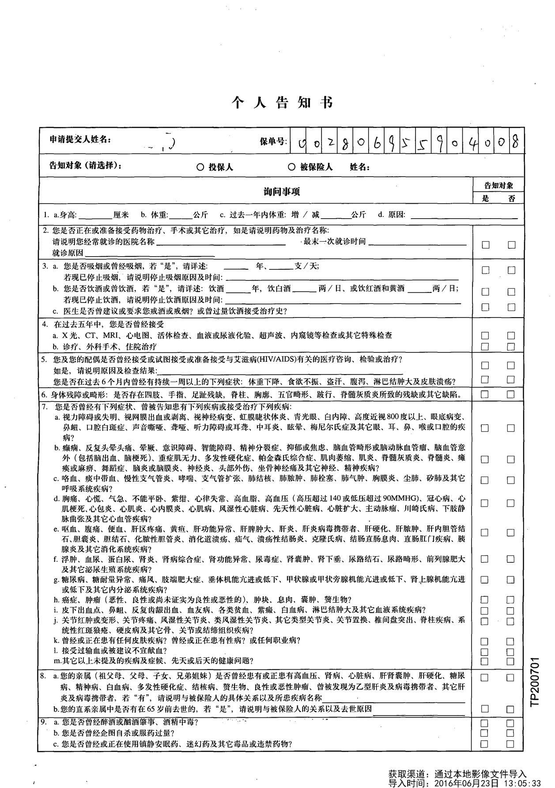
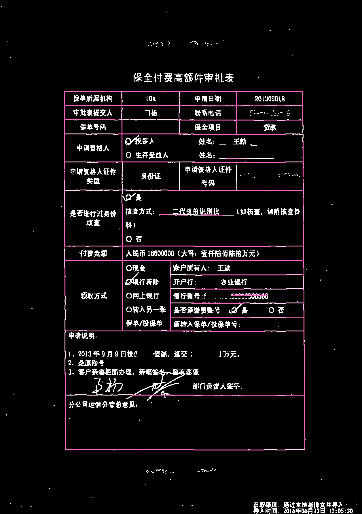
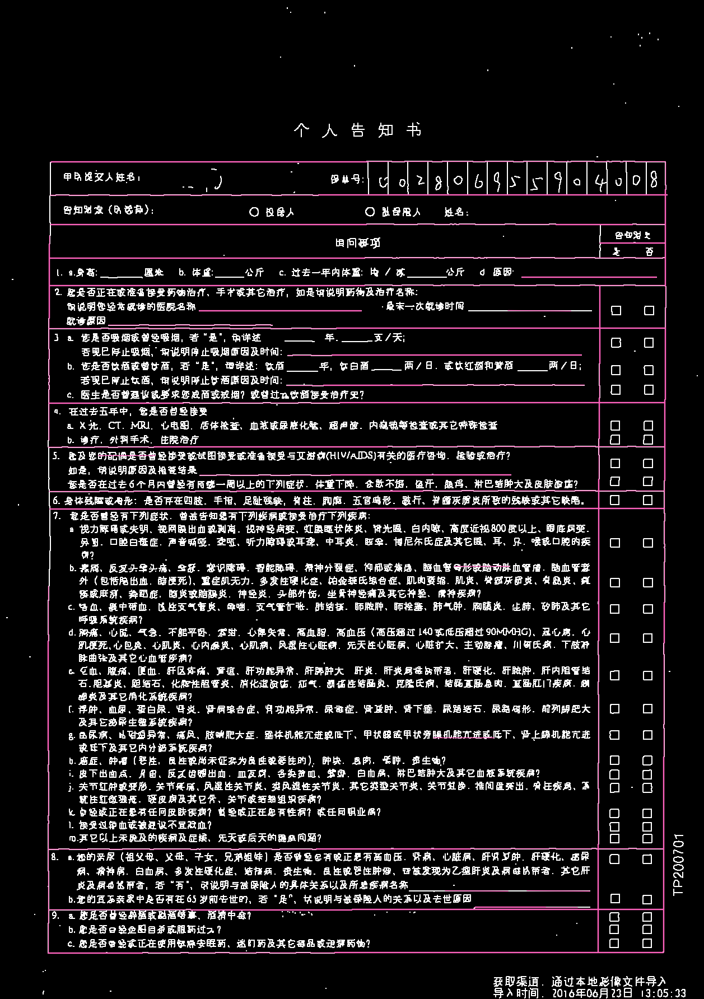
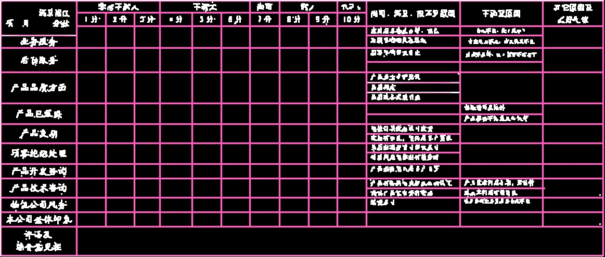
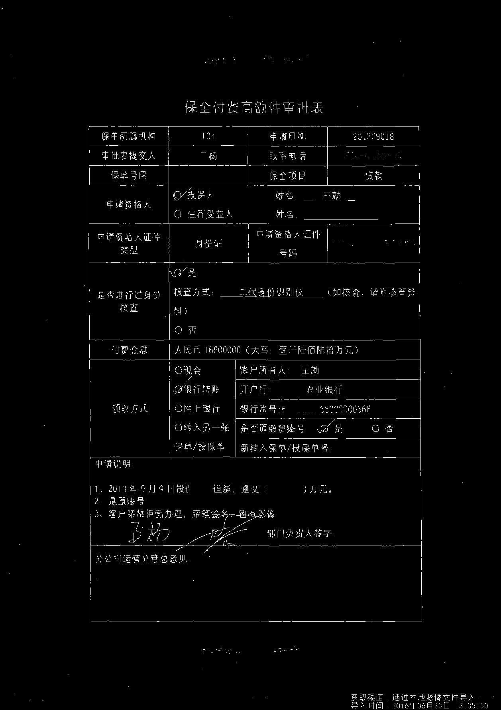

目的
在一个图表类的图中检测出表格线.
效果比对




实现思路
读图->滤波->二值->细化->膨胀->Hough->画线.其中，必要时的多次二值和转灰度不再写出。
其中,滤波是为了尽量平滑线条和粘合一些断点,但内核不能过大,可以拿着源码试试,效果清奇.
细化下面有图,主要是为了让图像边框的特征更明显.
膨胀让细化后的线再适当变粗.否则,后面用Hough时会出问题,这跟Hough的实现有关.注:细化后,线的折角变化大
Hough,想了解的童鞋,百度,Google吧.
源码
#include<cv.h>
#include <opencv2/opencv.hpp>
#include <highgui.h>
#include <vector>
#include <iostream>
using namespace cv;
using namespace std;
cv::Mat thinImage(const cv::Mat & src, const int maxIterations = -1)
{
assert(src.type() == CV_8UC1);
cv::Mat dst;
int width = src.cols;
int height = src.rows;
src.copyTo(dst);
int count = 0; //记录迭代次数
while (true)
{
count++;
if (maxIterations != -1 && count > maxIterations) //限制次数并且迭代次数到达
break;
std::vector<uchar *> mFlag; //用于标记需要删除的点
//对点标记
for (int i = 0; i < height ;++i)
{
uchar * p = dst.ptr<uchar>(i);
for (int j = 0; j < width; ++j)
{
//如果满足四个条件，进行标记
// p9 p2 p3
// p8 p1 p4
// p7 p6 p5
uchar p1 = p[j];
if (p1 != 1) continue;
uchar p4 = (j == width - 1) ? 0 : *(p + j + 1);
uchar p8 = (j == 0) ? 0 : *(p + j - 1);
uchar p2 = (i == 0) ? 0 : *(p - dst.step + j);
uchar p3 = (i == 0 || j == width - 1) ? 0 : *(p - dst.step + j + 1);
uchar p9 = (i == 0 || j == 0) ? 0 : *(p - dst.step + j - 1);
uchar p6 = (i == height - 1) ? 0 : *(p + dst.step + j);
uchar p5 = (i == height - 1 || j == width - 1) ? 0 : *(p + dst.step + j + 1);
uchar p7 = (i == height - 1 || j == 0) ? 0 : *(p + dst.step + j - 1);
if ((p2 + p3 + p4 + p5 + p6 + p7 + p8 + p9) >= 2 && (p2 + p3 + p4 + p5 + p6 + p7 + p8 + p9) <= 6)
{
int ap = 0;
if (p2 == 0 && p3 == 1) ++ap;
if (p3 == 0 && p4 == 1) ++ap;
if (p4 == 0 && p5 == 1) ++ap;
if (p5 == 0 && p6 == 1) ++ap;
if (p6 == 0 && p7 == 1) ++ap;
if (p7 == 0 && p8 == 1) ++ap;
if (p8 == 0 && p9 == 1) ++ap;
if (p9 == 0 && p2 == 1) ++ap;
if (ap == 1 && p2 * p4 * p6 == 0 && p4 * p6 * p8 == 0)
{
//标记
mFlag.push_back(p+j);
}
}
}
}
//将标记的点删除
for (std::vector<uchar *>::iterator i = mFlag.begin(); i != mFlag.end(); ++i)
{
**i = 0;
}
//直到没有点满足，算法结束
if (mFlag.empty())
{
break;
}
else
{
mFlag.clear();//将mFlag清空
}
//对点标记
for (int i = 0; i < height; ++i)
{
uchar * p = dst.ptr<uchar>(i);
for (int j = 0; j < width; ++j)
{
//如果满足四个条件，进行标记
// p9 p2 p3
// p8 p1 p4
// p7 p6 p5
uchar p1 = p[j];
if (p1 != 1) continue;
uchar p4 = (j == width - 1) ? 0 : *(p + j + 1);
uchar p8 = (j == 0) ? 0 : *(p + j - 1);
uchar p2 = (i == 0) ? 0 : *(p - dst.step + j);
uchar p3 = (i == 0 || j == width - 1) ? 0 : *(p - dst.step + j + 1);
uchar p9 = (i == 0 || j == 0) ? 0 : *(p - dst.step + j - 1);
uchar p6 = (i == height - 1) ? 0 : *(p + dst.step + j);
uchar p5 = (i == height - 1 || j == width - 1) ? 0 : *(p + dst.step + j + 1);
uchar p7 = (i == height - 1 || j == 0) ? 0 : *(p + dst.step + j - 1);
if ((p2 + p3 + p4 + p5 + p6 + p7 + p8 + p9) >= 2 && (p2 + p3 + p4 + p5 + p6 + p7 + p8 + p9) <= 6)
{
int ap = 0;
if (p2 == 0 && p3 == 1) ++ap;
if (p3 == 0 && p4 == 1) ++ap;
if (p4 == 0 && p5 == 1) ++ap;
if (p5 == 0 && p6 == 1) ++ap;
if (p6 == 0 && p7 == 1) ++ap;
if (p7 == 0 && p8 == 1) ++ap;
if (p8 == 0 && p9 == 1) ++ap;
if (p9 == 0 && p2 == 1) ++ap;
if (ap == 1 && p2 * p4 * p8 == 0 && p2 * p6 * p8 == 0)
{
//标记
mFlag.push_back(p+j);
}
}
}
}
//将标记的点删除
for (std::vector<uchar *>::iterator i = mFlag.begin(); i != mFlag.end(); ++i)
{
**i = 0;
}
//直到没有点满足，算法结束
if (mFlag.empty())
{
break;
}
else
{
mFlag.clear();//将mFlag清空
}
}
return dst;
}
int main(){
Mat srcImage = imread("/Users/mac/Pictures/test/slice1.png",0);
Mat midImage,midImage1,midImage2,dstImage;
GaussianBlur(srcImage,srcImage,Size(1,1),0,0);
threshold(srcImage, srcImage, 216,255, THRESH_BINARY);
bitwise_not(srcImage,midImage1);
threshold(midImage1, midImage2, 128, 1, THRESH_BINARY);
midImage = thinImage(midImage2);
midImage = midImage * 255;
//imwrite("/Users/mac/Pictures/test/out-slice1-thin.png",midImage);
Mat element = getStructuringElement(MORPH_RECT,Size(3,3));
dilate(midImage, midImage, element);
imshow("mid", midImage);
waitKey(0);
cvtColor(midImage,dstImage, CV_GRAY2BGR);
vector<Vec4i> lines;//定义一个矢量结构lines用于存放得到的线段矢量集合
HoughLinesP(midImage, lines, 1, CV_PI/180, 80, 100, 3 );//依次在图中绘制出每条线段
size_t i;
for( i = 0; i < lines.size(); i++ )
{
Vec4i l = lines[i];
line( dstImage, Point(l[0], l[1]), Point(l[2], l[3]), Scalar(186,88,255), 1, CV_AA);
}
imshow("y", dstImage);
waitKey(0);
imwrite("/Users/mac/Pictures/test/out-slice1.jpg",dstImage);
return 0;
}
其中,中间步骤中用到的thinImage函数转换图像后的效果效果图
通往此函数原作者的传送门李青峰的csdn

不足
- 短的线段检测不到
- 图源不好时,线有可能会断
- 还有少量的误检现象
结
如果大家有什么想法和建议,请留下comments.(:зゝ∠),让我们共同进步